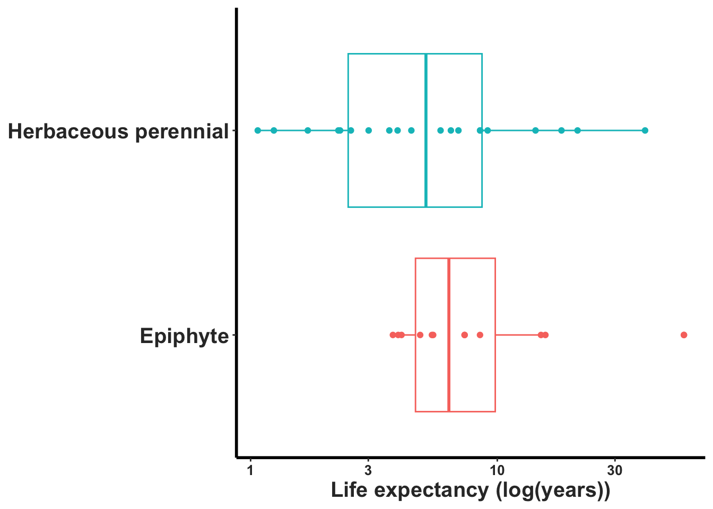
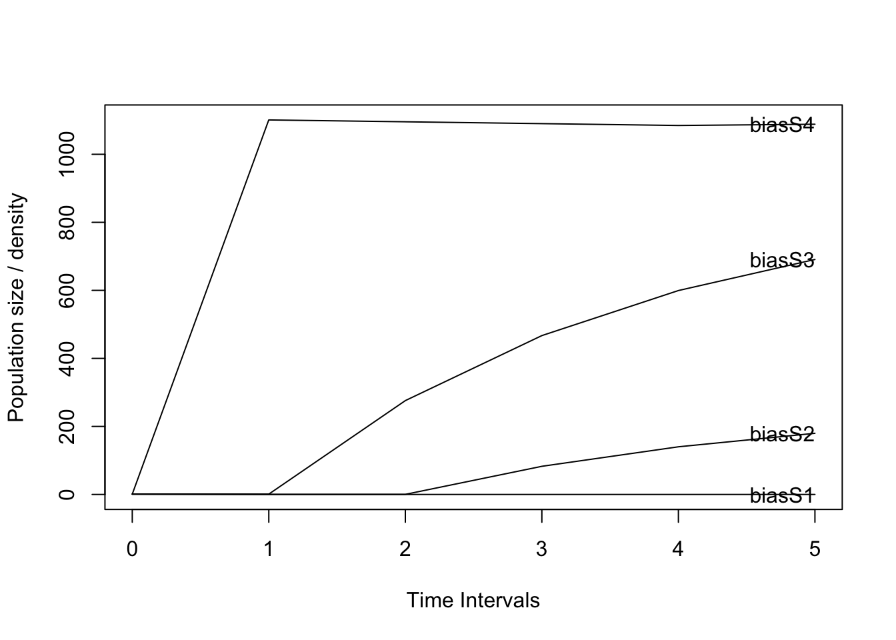
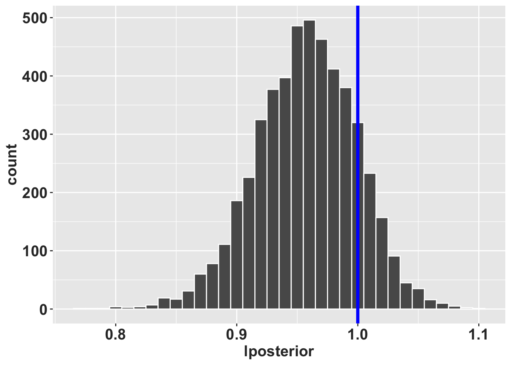
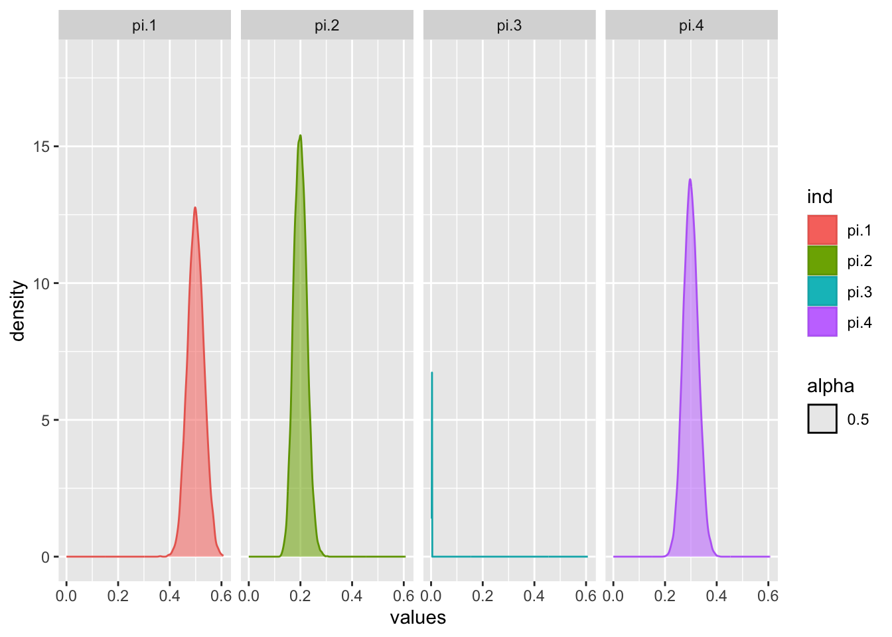

Chapter 21 Impactos de datos sin sentido sobre los análisis de dinámica poblacional
Por: Raymond L. Tremblay
if (!require("pacman")) install.packages("pacman")
pacman::p_load("DiagrammeR", "Rage", "popdemo", "popbio", "interpretCI",
"MCMCpack", "ggplot2", "plyr", "reshape")El valor principal de los estudios científicos proviene en que los datos representa una visión suficiente cerca a la realidad y sirve para inferir información sobre la ecología de la especie de interés. En ningún estudio ecológico se podrá obtener TODOS los datos para evaluar la relación biótica y abiótica sobre un organismos y todas sus interacciones. Ese modelo es primero demasiado complejo y irreal dentro del concepto de los trabajos científicos. El objetivo es tener una apreciación de los parámetros más importante para definir un cierto patrón o interacciones. Por consecuencia la base de todo estudios esta fundado en las unidades de los muestreos y de la recolección de datos. Si los datos no representa la realidad del estudio la interpretaciones de los análisis pudiese ser errónea. La matemática y sus ecuaciones y modelos no harán que la biología sea más cerca a la realidad si desde el principio los datos y el método de recolección de datos es erróneo.
En esta sección evaluamos diferentes aspectos de los análisis matriciales poblacional de projección y diferentes aspectos de la recolección de datos que pudiese ser problemáticos cuando uno considera la biología de una especie. La lista de “Impactos” no pretende incluir todos las posibles efecto de datos sin sentido, sino unos ejemplos si uno no considera estos problemas y cómo pueden distorsionar las interpretaciones. Por lo tanto, una advertencia a todos los biólogos de población para que estén consciente de estos temas.
21.1 Tamaño de muestra pequeño o eventos raros
Sin duda, el tema principal para el uso de PPM ha sido evaluar la proyección de población de especies raras o en peligro de extinción (otras cuestiones son ecológicas o evolutivas) (ref). En consecuencia, las especies raras o en peligro de extinción son naturalmente pequeñas y reduce el tamaño de la muestra del estudio o de algunas de las etapas/edades de la vida. Estos tamaños de muestra reducidos provocan estimaciones de parámetros y, a menudo, resultados sin sentido biológicos.
21.1.1 Sin Mortalidad/Supervivencia Perfecta
Considere una especie donde se recopilan datos de una especies Sp1 y la matriz de transición Sp1matU es la siguiente y la matriz de fertilidad es Sp1matF. Tenga en cuenta que ninguno de los individuos murió en la etapa adulta (supervivencia perfecta). En consecuencia, el tamaño de la población nunca disminuye o aumenta después de un período de tiempo. Bajo TODOS los modelos biológicamente realistas, esperaríamos que el tamaño de la población comenzaría a disminuir si una población no tiene reproducción. Pero en este caso como todos los individuos de la etapa sobreviven la población es eterna (algo irreal).
library(DiagrammeR)
Sp1matU <- rbind(
c(0.0, 0.0, 0.0),
c(0.5, 0.3, 0.0),
c(0.0, 0.4, 1.0)
) # transition matrix
Sp1matF <- rbind(
c(0.0, 0.0, 1.0),
c(0.0, 0.0, 0.0),
c(0.0, 0.0, 0.0)
) # fertility matrix
Sp1matA = Sp1matU+Sp1matF # TF matrix
library(Rage)
stages <- c("plantula", "juvenil", "adulto")
plot_life_cycle(Sp1matU, stages=stages, fontsize = 0)Así si analizamos esta matriz asumimos que ninguno de los individuos en etapa adulta muere, en ningún momento!!!. Claramente esto no es realista. Para cualquier especie, la probabilidad de muerte en cualquier etapa nunca es cero (aunque podría ser muy pequeña) y, por lo tanto, nuestra matriz no tiene sentido. Considere una especie de árbol, como Sequoia, es probable que para los árboles grandes de esta especie la supervivencia sea muy alta entre un año y otro, pero nunca del 100%. Hay que deferenciar entre lo que se observa en periodo y las probabilidades a largo plazo. Es possible que en el sitio de muestreo NO se observo mortalidad de los arboles grandes entre dos periodos de muestreo, que resultaria en una mortalidad de zero pero no es un valor real a largo plazo.
En el siguiente script mostramos que la población no cambia después de 5-6 periodos y se mantiene cercana a uno y no cambia nada (usamos la matriz de transición sin fecundidad). Si no hay reclutas (matriz de fertilidad), el tamaño de la población debería reducirse con el tiempo. Todo modelos de transiciones que no incluye la matriz de fertilidad debería resultar en reducción de tamaño poblacional.
## [,1] [,2]
## [1,] 0.9999999 1
## [2,] 0.9999999 1
## [3,] 0.9999999 1## [1] 0.7333333 0.8909091 0.9632653 0.9885593 0.9965281 0.9989548 0.9996861
## [8] 0.9999058 0.9999717 0.9999915 0.9999975 0.9999992 0.9999998 0.9999999
## [15] 1.0000000 1.0000000 1.0000000 1.0000000 1.000000021.1.1.1 Suponga un pequeño cambio en la mortalidad.
Tenga en cuenta que en este nuevo modelo, aunque la tasa de supervivencia es muy cercana a cero (0,995) y, por consecuencia, es posible una disminución de la población en cada período de tiempo (aunque solo sea en una pequeña fracción). Siempre hay que considerar si esta taza de mortalidad es biologicamente real o es un resultado del tamaño de la muestra. Este valor sugiere que se muestreo 1000 individuos y que 995 sobrevivieron. Si el tamaño fue de 1000, uno pudiese tener confianza en el parámetro.
Sp1matU_2 <- rbind(
c(0.0, 0.0, 0.0),
c(0.5, 0.3, 0.0),
c(0.0, 0.4, 0.995)
) # transition matrix
Sp1matF <- rbind(
c(0.0, 0.0, 1.0),
c(0.0, 0.0, 0.0),
c(0.0, 0.0, 0.0)
) # fertility matrix
Sp1matA_2=Sp1matU_2+Sp1matF
pop.projection(Sp1matU_2, n=n)$pop.changes## [1] 0.7316667 0.8874829 0.9586555 0.9836264 0.9915311 0.9939504 0.9946832
## [8] 0.9949045 0.9949712 0.9949913 0.9949974 0.9949992 0.9949998 0.9949999
## [15] 0.9950000 0.9950000 0.9950000 0.9950000 0.995000021.1.2 Irreductibilidad: No hay transiciones entre etapas
En el escenario actual, los juveniles no crecen para convertirse en adultos, todos los juveniles siguen siendo juveniles o mueren. Tenga en cuenta la figura del ciclo de vida donde no hay flechas que conecten a los juveniles con los adultos.
library(DiagrammeR)
Sp1matU_NT <- rbind(
c(0.0, 0.0, 0.0),
c(0.5, 0.7, 0.0),
c(0.0, 0.0, 0.995)
) # transition matrix
Sp1matF <- rbind(
c(0.0, 0.0, 1.0),
c(0.0, 0.0, 0.0),
c(0.0, 0.0, 0.0)
) # fertility matrix
Sp1matA_NT = Sp1matU_NT+Sp1matF # TF matrix
library(Rage)
stages <- c("plantula", "juvenil", "adulto")
plot_life_cycle(Sp1matU_NT, stages=stages, fontsize = 0)Como lo muestra Caswell (2000) y explorado más recientemente por (stott2010?), las matrices deben de ser irreducibles. El concepto de irreductibilidad está asociado con el ciclo de vida de la especie y la matriz incluye las transiciones de todas las etapas a todas las demás etapas. A la figura del ciclo de vida anterior le faltan dos componentes importantes en la historia de vida de la especie, ningún juvenil crece para convertirse en adulto y ninguno de los adultos produce plántulas (semillas que crecen hasta convertirse en plántulas).
Una manera fácil de determinar si la matriz es irreducible es correr el siguiente script isIrreducible en el paquete (popdemo). Tenga en cuenta que, en este caso, el resultado es Falso para la matriz anterior.
isIrreducible(Sp1matU_NT) # para la matriz de transición, faltando una etapa de transición y fertilidad## [1] FALSE## [1] FALSE# Ahora considerando Sp1matA_2
isIrreducible(Sp1matA_2) # incluye todas las transiciones y la fertilidad## [1] TRUE21.1.3 Ninguna supervivencia
La mortalidad es uno de los estadios del ciclo de vida de una especies, pero raramente se añade al ciclo de vida porque es implícito en los cálculos. A menudo se observa que la supervivencia de los individuos más pequeños o la primera etapa del ciclo de vida de una especie es muy arriesgada, donde la probabilidad de supervivencia es muy baja. Por ejemplo, la mayoría de las semillas no sobreviven para germinar. Esta es probablemente la norma en las orquídeas donde la producción de semillas es muy alta (a veces millones de semillas en una cápsula de semillas, es decir, Catasetum; ref), pero pocas germinan (ref). Sin embargo, esto no se limita a las orquídeas, en los árboles se puede observar el mismo patrón, por ejemplo, en Nothofagus pumilio el reclutamiento de plántulas fue inferior al 1,5 % Torres et al. (2015). NEED Other EXAMPLES OF NO SEED OR SEEDLING RECRUITMENTS.
Como es bien sconocido, la germinación de semillas en las orquídeas no es sencilla y muchas variables pueden influir en la germinación de semillas Rasmussen et al. (2015) ……. más detalle sobre lo que se conoce y lo que no se conoce…
En el gráfico del ciclo de vida actual, ninguna de las plántulas sobrevive o crece a la siguiente etapa. Tenga en cuenta que en la primera columna de la matriz de transición todos los valores son cero. La población puede haber comenzado con muchas (incluso miles) de plántulas, pero ninguna creció hasta convertirse en un juvenil o permaneció como plántula antes del siguiente muestreo. Esto da como resultado una matriz que es reducible isIrreducible = FALSO y en consecuencia no cumple con los requisitos necesarios.
library(DiagrammeR)
Sp1matU_NS <- rbind(
c(0.0, 0.0, 0.0),
c(0.0, 0.7, 0.0),
c(0.0, 0.25, 0.995)
) # transition matrix
Sp1matF <- rbind(
c(0.0, 0.0, 1.0),
c(0.0, 0.0, 0.0),
c(0.0, 0.0, 0.0)
) # fertility matrix
Sp1matA_NS = Sp1matU_NS+Sp1matF # TF matrix
library(Rage)
stages <- c("plantula", "juvenil", "adulto")
plot_life_cycle(Sp1matU_NS, stages=stages, fontsize = 0)## [1] FALSE21.2 Redondeo excesivo de valores
Uno de los errores más simples en la construcción de los elementos de la matriz es el error de redondeo excesivo u otras estimaciones que dan como resultado valores de supervivencia superiores a 1,00, lo que a veces da como resultado una supervivencia incluso superior al 100%. Una estimación de supervivencia de mayor de 1 es que de la nada aumenta la cantidad de individuos sin reproducción o clonaje.
Por ejemplo en un análisis de Serapia cordigera Pellegrino and Bellusci (2014). Aquí los autores evaluaron las transiciones entre latencia, plántulas, roseta vegetativa y floración. Aquí mostramos una de estas matrices que esta incluida en el material suplementario del articulo. Período de tiempo 2001-2002, A1.
library(DiagrammeR)
SerapiaU <- rbind(
c(0.668, 0.122, 0.294, 0.401),
c(0.128, 0.0, 0.0, 0.0),
c(0.0, 0.302, 0.453, 0.366),
c(0.214, 0.364, 0.185, 0.207)
) # transition matrix
SerapiaF <- rbind(
c(0.0, 0.0, 0.0, 0.0),
c(0.0, 0.0, 0.0, 0.0),
c(0.0, 0.0, 0.0, 0.0),
c(0.0, 0.0, 0.0, 0.0)
) # fertility matrix
SerapiaA = SerapiaU+SerapiaF # TF matrix
library(Rage)
stages <- c("latente", "plantulas", "vegetativa", "adulto")
plot_life_cycle(SerapiaA, stages=stages)21.3 Estimaciones de fertilidad y ciclo de vida
La importancia de considerar cómo se incluye la fertilidad en el ciclo de vida es extremadamente influyente en los resultados de los modelos, y si se considera erróneamente puede dar lugar a interpretaciones sin sentido. Mostramos algunos ejemplos de cómo estos pueden incluirse en el ciclo de vida y la matriz y dar como resultado problemas de causa. Vea el capitulo 7 para más detalle.
21.3.1 Ciclo de vida y etapa de fertilidad incorrectos
Suponga que tiene una especie en la que modela el ciclo de vida como plántula, juvenil y adulto. La fertilidad se mide como el número de semillas producidas por un adulto (número medio de semillas por adulto). Después de recopilar los cálculos de datos, se determina que el número medio de semillas por adulto es 11000. Si agregamos la matriz de transición y fertilidad a continuación y evaluamos el lambda y graficamos el crecimiento de la población con la función proyecto, tenemos un lambda de 4.93 y después de solo 5 períodos de tiempo, el número de adultos supera los 250,000. Por consecuencia, la estimación de la tasa de crecimiento de la población sería incorrecta y engañosa, donde 30% de 11,000 semillas crecen a ser plántulas, un total de 3,300 plantulas!!!
El error es que el valor en la matriz de fertilidad debería corresponder a la primera etapa de la matriz, en este caso la etapa de plántula. Por lo tanto, la esquina superior derecha de la matriz de fertilidad no debe ser la cantidad media de semillas por planta, sino la cantidad media de plántulas producidas por una planta adulta.
library(DiagrammeR)
Sp1matU_Fert <- rbind(
c(0.0, 0.0, 0.0),
c(0.3, 0.7, 0.0),
c(0.0, 0.25, 0.995)
) # transition matrix
Sp1matF <- rbind(
c(0.0, 0.0, 1100.0),
c(0.0, 0.0, 0.0),
c(0.0, 0.0, 0.0)
) # fertility matrix
Sp1matA_Fert = Sp1matU_Fert+Sp1matF # TF matrix
library(Rage)
stages <- c("plantula", "juvenil", "adulto")
lambda(Sp1matA_Fert)## [1] 4.937718## [1] 5 5 5pr <- project(Sp1matA_Fert, vector="n", time=5)
plot(pr) # Note that even after just 5 time periods, the number of adults is larger than 250,000 individuals
Si deseamos agregar una etapa de semilla, debemos incluir la etapa en nuestro modelo y matriz con una nueva etapa la etapa de semilla, y tener una estimación del número de semillas que germinan y se convierten en plántulas. En el caso de las orquídeas, es probable que sea una estimación difícil de lograr porque las semillas de las orquídeas son difíciles de seguir en la naturaleza a menos que se haya usado el método del paquete de semillas (ref) o se utilizó algún método de huella genética para determinar la procedencia de las semillas.
library(DiagrammeR)
Sp1matU_Fert2 <- rbind(
c(0.0, 0.0, 0.0, 0.0),
c(0.0001, 0.0, 0.0, 0.0),
c(0.0, 0.3, 0.7, 0.0),
c(0.0, 0.0, 0.25, 0.995)
) # transition matrix
Sp1matF2 <- rbind(
c(0.0, 0.0, 0.0, 1100.0),
c(0.0, 0.0, 0.0, 0.0),
c(0.0, 0.0, 0.0, 0.0),
c(0.0, 0.0, 0.0, 0.0)
) # fertility matrix
Sp1matA_Fert2 = Sp1matU_Fert2+Sp1matF2 # TF matrix
library(Rage)
stages <- c("semillas", "plantula", "juvenil", "adulto")
plot_life_cycle(Sp1matA_Fert2, stages=stages)## [1] 1.019805# show change in population size
pr <- project(Sp1matA_Fert2, vector="n", time=5)
plot(pr) # Note that now the number of adults did not increase to the level of the previous model
En el ejemplo anterior no hemos incluido una etapa de latencia de semillas. En muchas especies de plantas, las semillas pueden permanecer latentes durante uno o más años. No se sabe si las semillas de las orquídeas están inactivas durante mucho tiempo (gale2010restricciones?), excepto para algunas especies que han demostrado que las semillas aún están vivas después de varios años en el suelo usando la prueba de tinción de tetrazolio Rasmussen and Whigham (1993) y Whigham et al. (2006). MAS REFERENCIAS!!
21.4 Problemas de análisis de datos
21.4.1 Estimaciones de intervalos de confianza incorrectas
Las estimaciones de dispersión en los parámetros de la matriz de supervivencia, transición, muerte y fertilidad son útiles de múltiples maneras. El enfoque más básico es comprender la incertidumbre en el parámetro como una función del tamaño de la muestra, los parámetros con gran dispersión deben verse con precaución. Los parámetros de dispersión pueden ser útiles para simulaciones y comprender la incertidumbre en los parámetros de población como lambda y la probabilidad de persistencia y extinción.
Los parámetros de supervivencia, muerte, estasis y transiciones NO se distribuyen normalmente ya que los valores van de cero a 1. Ningún valor puede ser menor que cero o mayor que uno, incluidos los intervalos de confianza del 95 % (limitados por 0 y 1). Si se usa la distribución gaussiana (normal) es probable que el IC del 95 % esté fuera de los límites. Supongamos que deseamos calcular la probabilidad de supervivencia de una etapa y sus intervalos de confianza del 95%.
Se deterimna que de 20 individuos 2 fallecen y 19 sobrevivieron entre el primer muestreo y el segundo.
- Construya un intervalo de confianza del 95% de la proporción de individuos que murieron
Donde la proporción que murió es \(\hat{p}\) y el número que murió es \(n_d\) y \(n\) es el tamaño de la muestra
\[\hat{p}=\frac{n_d}{n}\] con una probabilidad de muerte del 20%.
## [1] 0.05El IC del 95% de una proporción se calcula
\[ \hat{p}\pm Z_{0.05}*\sqrt{}(\frac{\hat{p}(1-\hat{p})}{n})\] - Z_{0.05} es el valor crítico de Z para un IC del 95% = 1.955. Nota que ese calculo, uno de los intervalos de confianza es negativo.
## [1] 0.1455186## [1] -0.04551858Un método más fácil es usar la función R propCI de la biblioteca(interceptCI)
## $data
## # A tibble: 1 × 1
## value
## <lgl>
## 1 NA
##
## $result
## alpha n df p P se critical ME lower upper
## 1 0.05 20 19 0.05 0 0.04873397 1.959964 0.09551683 -0.04551683 0.1455168
## CI z pvalue alternative
## 1 0.05 [95CI -0.05; 0.15] 1.025978 0.3049018 two.sided
##
## $call
## propCI(n = 20, p = 0.05, alpha = 0.05)
##
## attr(,"measure")
## [1] "prop"21.5 Distribución Dirichlet de intervalo de confianza
Sin embargo, ¿cómo se calcula el IC del 95% cuando hay más de 2 proporciones? Debido a que la proporción de todas las etapas depende de la proporción de las otras etapas, el análisis debe considerar la proporción y el IC del 95% debe incluir todas las etapas simultáneamente. La función requerida es la función de Dirichlet multinomial (multigrupo).
En el análisis estimamos los intervalos de confianza del 95% de la transición y estasis de plántulas a plántulas (50%), juveniles (20%), adultos (0%) y muerte (30%). Tenga en cuenta el gráfico del ciclo de vida que, como de costumbre, excluye la probabilidad de que mueran las plántulas.
Dirichlet <- rbind(
c(0.5, 0.0, 0.0),
c(0.2, 0.0, 0.0),
c(0.0, 0.3, 0.7)
) # transition matrix
library(Rage)
stages <- c("plantula", "juvenil", "adulto")
plot_life_cycle(Dirichlet, stages=stages)Para evaluar el intervalo IC del 95% simultáneamente de las cuatro transiciones, usamos la library(MCMCpack), que es un paquete dedicado a realizar simulaciones de Markov Chain Monte Carlo. Usaremos la función MCmultinomdirichlet. Tenga en cuenta que la primera lista son las proporciones que se muestran en la matriz para la etapa de plántula c(.50n,.02n,.0n,.3n) multiplicadas por el tamaño de la muestra n= 25. La segunda lista son los priores bayesianos c(.5,.2,0.0001,.3), en este caso asumí que la suma de los previos es igual a 1. Esto da como resultado una confianza muy baja en la percepción previa de lo que es la transiciones. Otro tipo de previa para la transición es que sean iguales, sin embargo, podríamos haber usado c(1,1,0,.000001, 1), donde este previo sugiere una transición igual para todos menos las plántulas que hay muy poca probabilidad que crezcan hasta convertirse en adultos.
El concepto de lo anterior no se puede explicar completamente aquí, consulte las siguientes referencias para obtener información más detallada. ANADIR referencias sobre previas…..
Los resultados en la figura muestran que hay mucha dispersión alrededor de la proporción media de las estadísticas y la transición como se esperaba debido al pequeño tamaño de la muestra.
n=25
L=posteriorPRIORL <- MCmultinomdirichlet(c(.50*n,.2*n,.0*n,.3*n), c(.5,.2,0.0001,.3), mc=10000)
dfL=as.data.frame(L)
t(summary(dfL))##
## pi.1 Min. :0.1523 1st Qu.:0.4342 Median :0.4999
## pi.2 Min. :0.02337 1st Qu.:0.14311 Median :0.19196
## pi.3 Min. :0.000e+00 1st Qu.:0.000e+00 Median :0.000e+00
## pi.4 Min. :0.06172 1st Qu.:0.23743 Median :0.29458
##
## pi.1 Mean :0.5003 3rd Qu.:0.5665 Max. :0.8335
## pi.2 Mean :0.19962 3rd Qu.:0.24771 Max. :0.56991
## pi.3 Mean :7.150e-07 3rd Qu.:0.000e+00 Max. :5.291e-03
## pi.4 Mean :0.30003 3rd Qu.:0.35759 Max. :0.64779#head(dfL)
stack_dfL=stack(dfL)
comb_dfbL= cbind(stack_dfL, T="25")
All_Data3=comb_dfbL
levels(All_Data3$ind)[levels(All_Data3$ind)=="pi.1"]="Plantulas"
levels(All_Data3$ind)[levels(All_Data3$ind)=="pi.2"]="Juvenil"
levels(All_Data3$ind)[levels(All_Data3$ind)=="pi.3"]="Adulto"
levels(All_Data3$ind)[levels(All_Data3$ind)=="pi.4"]="Muerto"
library(ggplot2)
ggplot(data=All_Data3, aes(x=values, fill=ind, colour=ind))+
geom_density(aes(alpha=.5)) +
scale_y_continuous(limit=c(0, 5.5))+
scale_colour_hue(l=60)+
facet_grid(~ind)
Ahora calculemos el IC del 95% de las transiciones
- Intervalos de confianza de transiciones, estasis y supervivencia basados en simulación y distribución de Dirichlet.
Aspectos importantes a tener en cuenta.
- los IC del 95% están acotados entre 0 y 1. Los valores por debajo de cero o por encima de uno en los parámetros no tendrían sentido.
- la suma de la media es igual a 1.
- la suma de la mediana es igual a 1.
- la forma de la distribución NO se distribuye normalmente, ver figura anterior. La forma de la distribución se llama distribución beta.
##
## Attaching package: 'reshape2'## The following objects are masked from 'package:reshape':
##
## colsplit, melt, recast## The following object is masked from 'package:tidyr':
##
## smithsTransitions=ddply(All_Data3, c("ind"), summarise,
mean = round(mean(values),3), sd = round(sd(values),4),
median= median(values),
#sem = round(sd(values)/sqrt(length(values)),6),
CI5 = quantile(values, probs = c(0.05)),
CI95 = round(quantile(values, probs = c(0.95)), 4),
min=min(values),
max=max(values)
)
Transitions## ind mean sd median CI5 CI95 min max
## 1 Plantulas 0.5 0.0958 0.4999146 0.34287628 0.6586 0.15234749 0.833458812
## 2 Juvenil 0.2 0.0767 0.1919595 0.08689021 0.3394 0.02336568 0.569906788
## 3 Adulto 0.0 0.0001 0.0000000 0.00000000 0.0000 0.00000000 0.005290771
## 4 Muerto 0.3 0.0885 0.2945777 0.16374761 0.4541 0.06172021 0.647791265Para comparar con el ejemplo anterior asumimos que en lado de tener solamente 25 plantas teníamos 250 plantas para los estimados.
Nota que la mediana sigue en el mismo lugar (casi) pero los IC cambian mucho y es más reducido, ya que con más datos en el muestreo resulta en más confianza y reducción en el IC. Este analisis es primordial para enterder la confianza que uno debería tener sobre los estimados de los parámetros de la matriz. Un ejemplo si se observa un IC muy grande eso pudiese ser utilizado para modificar la recolección de datos en el campo para aumentar el tamaño de muestra de esa etapa de vida.
b=250
L=posteriorPRIORL <- MCmultinomdirichlet(c(.50*b,.2*b,.0*b,.3*b), c(.5,.2,0.0001,.3), mc=10000)
dfL=as.data.frame(L)
t(summary(dfL))##
## pi.1 Min. :0.3624 1st Qu.:0.4790 Median :0.4999
## pi.2 Min. :0.1258 1st Qu.:0.1821 Median :0.1993
## pi.3 Min. :0.000e+00 1st Qu.:0.000e+00 Median :0.000e+00
## pi.4 Min. :0.1988 1st Qu.:0.2799 Median :0.2991
##
## pi.1 Mean :0.5003 3rd Qu.:0.5217 Max. :0.6074
## pi.2 Mean :0.1999 3rd Qu.:0.2166 Max. :0.3036
## pi.3 Mean :4.520e-07 3rd Qu.:0.000e+00 Max. :3.357e-03
## pi.4 Mean :0.2998 3rd Qu.:0.3192 Max. :0.4082#head(dfL)
stack_dfL=stack(dfL)
comb_dfbL= cbind(stack_dfL, T="25")
All_Data4=comb_dfbL
levels(All_Data4$ind)[levels(All_Data3$ind)=="pi.1"]="Plantulas"
levels(All_Data4$ind)[levels(All_Data3$ind)=="pi.2"]="Juvenil"
levels(All_Data4$ind)[levels(All_Data3$ind)=="pi.3"]="Adulto"
levels(All_Data4$ind)[levels(All_Data3$ind)=="pi.4"]="Muerto"
library(ggplot2)
ggplot(data=All_Data4, aes(x=values, fill=ind, colour=ind))+
geom_density(aes(alpha=.5)) +
scale_y_continuous(limit=c(0, 18))+
scale_colour_hue(l=60)+
facet_grid(~ind)
library(plyr)
library(reshape2)
Transitions=ddply(All_Data4, c("ind"), summarise,
mean = round(mean(values),3), sd = round(sd(values),4),
median= median(values),
#sem = round(sd(values)/sqrt(length(values)),6),
CI5 = quantile(values, probs = c(0.05)),
CI95 = round(quantile(values, probs = c(0.95)), 4),
min=min(values),
max=max(values)
)
Transitions## ind mean sd median CI5 CI95 min max
## 1 pi.1 0.5 0.0314 0.4999471 0.4491278 0.5525 0.3624127 0.607409659
## 2 pi.2 0.2 0.0250 0.1992647 0.1601248 0.2418 0.1257887 0.303590491
## 3 pi.3 0.0 0.0000 0.0000000 0.0000000 0.0000 0.0000000 0.003356622
## 4 pi.4 0.3 0.0290 0.2990979 0.2534125 0.3483 0.1987990 0.408244668